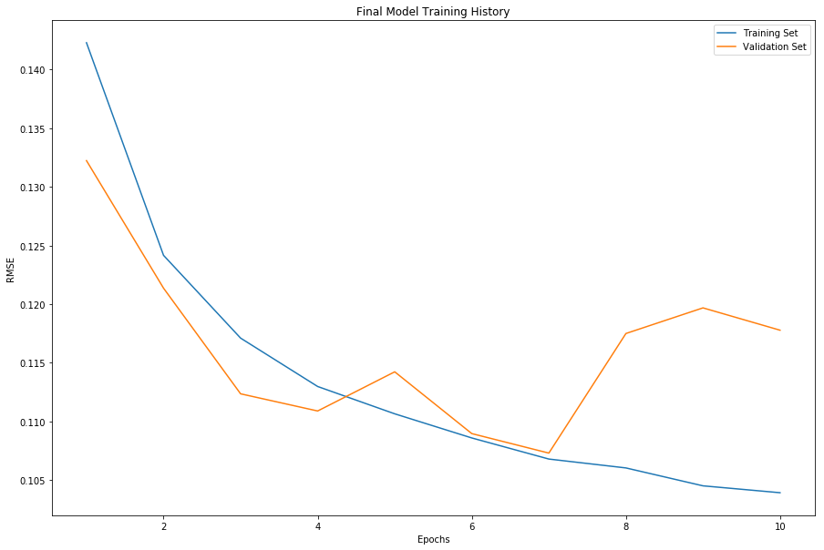
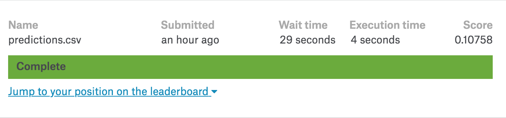

Project Summary:
-
This project involoved the development of a custom convolutional neural network to simulate survey results for different galaxy morphologies. The survey covered 37 possible responses and is summarized below:

-
Training was constrained to a 4 core laptop with emphasis of the project being on low computation. The final model architecture utilizes downsampling in the first three convolutional layers in order to allow for training on a conventional laptop. This final architecture is shown below:

-
The model converges after ~7 epochs through the data achieving a validation RMSE around 10.7.
-

Results:
-
The final model was trained on 55000 images and valiated on the remaining 6000. The submission scores 0.10758 on kaggle which would put it in 68th position (Bronze).
- 
 Model Training
Model Training